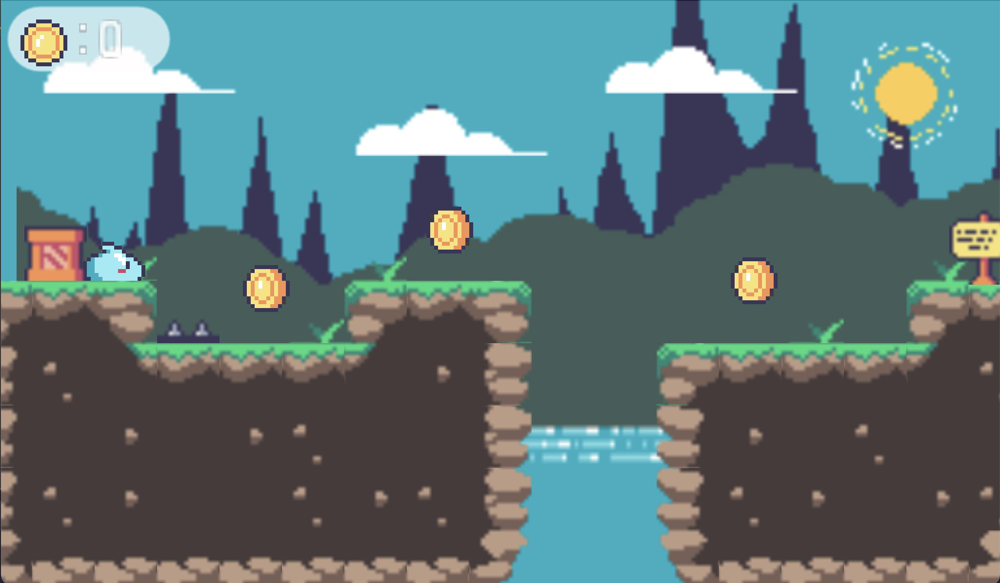

Professional with quick adaptability to new working environments. I just finished the Adalab Full Stack Development Bootcamp.
About me
I have just finished the Adalab Bootcamp for Full Stack development. During these three months of intensive work, I have demonstrated my desire to learn and my commitment to my responsibilities. My current goal is to continue improving and increasing my knowledge in web development. So, I am excited to be able to apply my knowledge in my next job. Here are a few technologies I’ve been working with recently:
Adalaber - HTML5 | CSS3, Flexbox, Grid, SASS | JavaScript | React ES6 | Node JS, Express JS, SQL | Git (GitHub) | Agile & SCRUM | VSC Gulp | NPM
Frontend programming Bootcamp
Adalab During this Bootcamp I have developed and/or participated in more than 15 developments with technologies practicing:
Layout: HTML5, CSS3, Flexbox, CSS Grid, responsive design, SASS, Bootstrap. JavaScript (ES6) and third-party web services (APIs).
Version control with Git
Creation of simple SPAs with React
Basic knowledge of APIs and backend programming: applications with Node JS, Express and SQL. Handling of Slack, GitHub, VS Code, Gulp, Terminal, Linter, Zeplin
Experience in project development using Agile philosophy and Scrum framework Intensive front-end development course student - Adalab
Playing and Learning
I enjoy learning how to make videogames with platforms like Godot unreal engine…

Want to learn more about my services?
Check out this page I created. It carries a lot more details…
Professional experience
Professional experience
Sept 2017- January 2022_ PEREZ DE LA CRUZ-TRILLO GARRIGUES S.L.P., Madrid, España Administrative, Receptionist & Secretary/ PA. Handling clients visits, mail, and incoming and outgoing calls; coordination of Partners and lawyers agenda (travel, meetings, conferences, etc.); administrative assistance and various file management; drafting, review and electronic signature of writings to present to the court; drafting, sending and follow-up (collection and execution) of the procedural costs; management of recordings and transcripts of previous hearings and trials; scheduling meetings rooms; management of office supplies orders, organization of company meals.
July 2013-July 14_ NOVOTEL, Milton Keynes, UK
March 2008- 2015_ Administrative assistant, Receptionist & Secretary/ PA (Madrid, Spain). In PICTET & CIE, Accenture, Larache Celebraciones, Chep, Planeta Publishers, British Council Young Learners, Eptisa, Nynas.
Contact
 https://twitter.com/IrisMireyazb
 www.linkedin.com/in/iris-zunel-ballesteros
Don’t click here
See you soon!